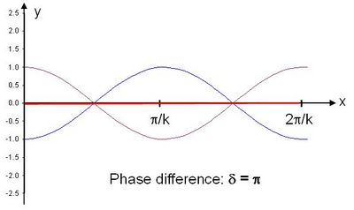
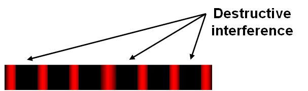

A pair of light or sound waves will experience interference when they pass through each other. The individual waves will add together (superposition) so that a new wavefront is created.
Destructive interference occurs when the maxima of two waves are 180 degrees out of phase: a positive displacement of one wave is cancelled exactly by a negative displacement of the other wave. The amplitude of the resulting wave is zero.
The images below show the effects of destructive interference between two waves with the same amplitude and frequency (ω) described by the equations:
 and
and 
where δ is the phase difference between the waves, k is the wave number, x is the wave position and t is time.

In the image on the left, the phase difference is δ = π/2 or 90 degrees. The two waves (thin lines, shown in blue and purple) interfere, with the resulting wave (shown in red) equal to the sum of these two waves. Note that the nodes of the two original waves (where the waves cross the y=0 axis) do not occur at the same values of x, and the nodes of the resulting wave occur when y1 + y2 = 0.
| In the image on the right, the phase difference is δ = π, so that the two waves (shown in blue and purple) interfere destructively and the amplitude of the resulting wave (shown in red) is equal to zero. |
 |
For interference of light waves, such as in Young’s two-slit experiment, bands of bright and dark lines will appear. The dark regions occur whenever the waves destructively interfere.

The alternative to destructive interference is constructive interference, when the waves are in phase so that the maxima of the waves line up.